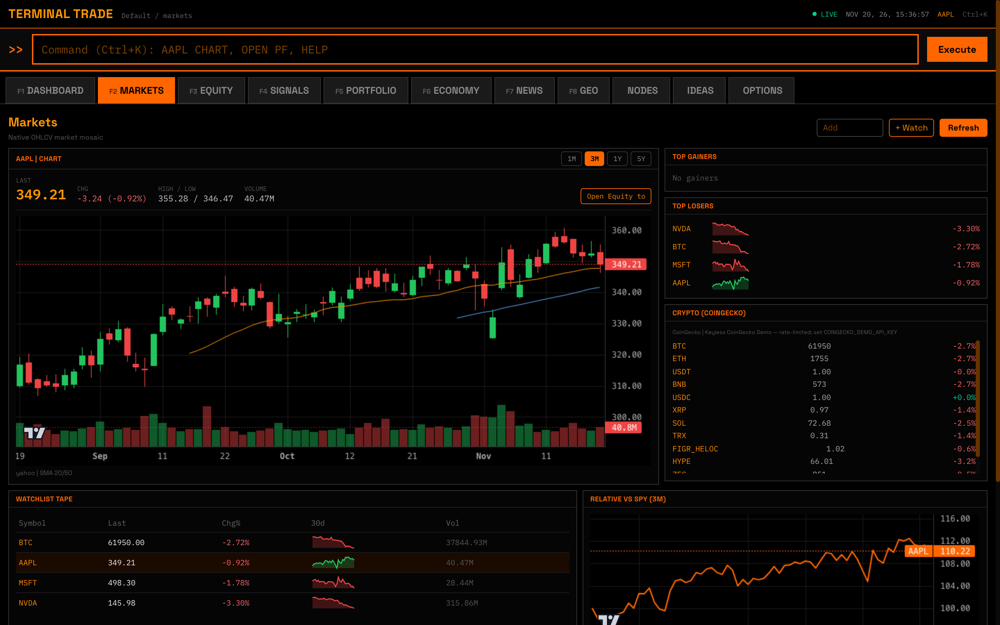
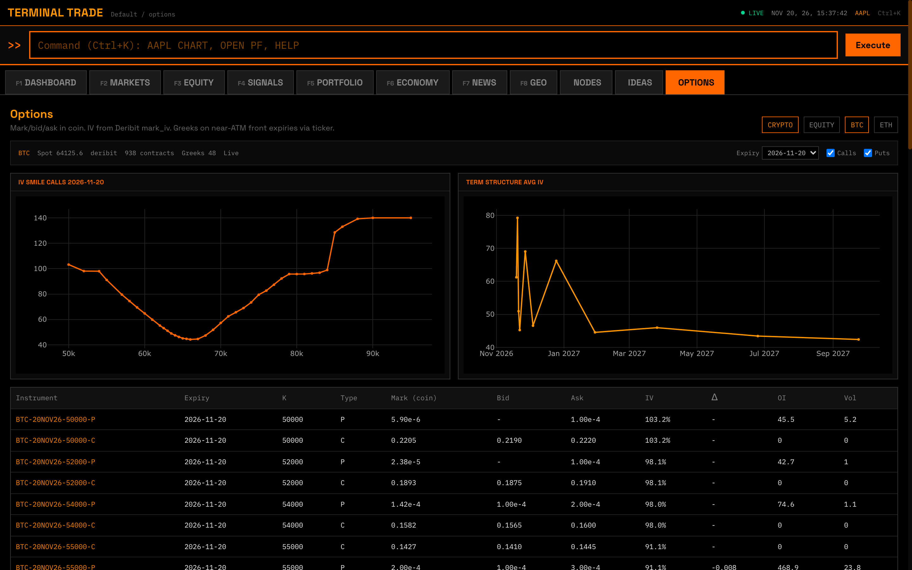

Terminal Trade
Ứng dụng nghiên cứu và phân tích thị trường tài chính
Mã nguồn github.com/letrinhandn/Terminal-Trade
Bản demo terminal-trade-iota.vercel.app
Tổng quan
Terminal Trade là ứng dụng nghiên cứu và phân tích thị trường tài chính, tập hợp dữ liệu cổ phiếu, tiền mã hóa, kinh tế vĩ mô và tin tức trong một giao diện làm việc thống nhất. Dự án được xây dựng bằng Next.js và TypeScript, với cách tổ chức màn hình và thao tác lấy cảm hứng từ các hệ thống thông tin tài chính chuyên dụng.
Ứng dụng hướng đến nhu cầu theo dõi thị trường, tra cứu dữ liệu lịch sử, phân tích công cụ tài chính và kiểm tra các giả thuyết đầu tư. Thay vì phụ thuộc vào một nhà cung cấp dữ liệu duy nhất, Terminal Trade tích hợp nhiều nguồn công khai và cho phép cấu hình khóa truy cập bổ sung khi cần. Dự án phục vụ nghiên cứu và học tập, không kết nối để thực hiện giao dịch bằng tiền thật.

Chức năng chính
Tổng quan và theo dõi thị trường
Màn hình tổng quan hiển thị các chỉ số thị trường, tỷ giá ngoại hối, hàng hóa, báo giá và tin tức tài chính. Thông tin về diễn biến thị trường được bố trí thành các bảng theo dõi, giúp người dùng quan sát nhiều nhóm tài sản từ cùng một giao diện.
Khu vực phân tích thị trường cung cấp biểu đồ nến, khối lượng giao dịch, danh sách mã theo dõi và công cụ so sánh biến động. Người dùng có thể xem diễn biến giá tương đối và hệ số tương quan giữa các tài sản trong những khoảng thời gian được lựa chọn.

Phân tích cổ phiếu
Không gian nghiên cứu cổ phiếu tập hợp báo giá, dữ liệu lịch sử và các thông tin doanh nghiệp. Những nội dung có thể tra cứu bao gồm báo cáo tài chính, kết quả kinh doanh, cơ cấu sở hữu, thông tin cổ đông và các chỉ số môi trường, xã hội, quản trị doanh nghiệp khi nguồn dữ liệu hỗ trợ.
Các bảng và biểu đồ được tổ chức trong cùng một khu vực làm việc để thuận tiện đối chiếu dữ liệu giá với thông tin cơ bản của doanh nghiệp.

Tín hiệu kỹ thuật và danh mục mô phỏng
Terminal Trade cung cấp bộ phát hiện tín hiệu kỹ thuật dựa trên những quy tắc xác định trước. Tín hiệu được thể hiện trực tiếp trên biểu đồ giá nhằm hỗ trợ quan sát và đánh giá diễn biến thị trường. Đây là công cụ phân tích, không phải hệ thống tự động đưa ra hoặc thực hiện lệnh giao dịch.
Phần danh mục cho phép ghi nhận các giao dịch mô phỏng, theo dõi giá trị tài sản ròng, lãi lỗ, phân bổ theo ngành và một số chỉ số rủi ro. Các biểu đồ và bản đồ nhiệt hỗ trợ xem xét cơ cấu danh mục trong quá trình nghiên cứu.
Kinh tế vĩ mô, tin tức và rủi ro địa chính trị
Ứng dụng tích hợp dữ liệu kinh tế vĩ mô từ FRED cùng nguồn tin được tổng hợp qua RSS. Màn hình địa chính trị sử dụng các chỉ báo thị trường đại diện cho rủi ro vĩ mô, dữ liệu tương quan và tin tức từ GDELT để hỗ trợ theo dõi những chủ đề có khả năng tác động đến thị trường.
Những thông tin này đóng vai trò tham khảo nghiên cứu, không phải phép đo trực tiếp hoặc dự báo chắc chắn về rủi ro địa chính trị.
Tương quan, sàng lọc và quyền chọn
Bên cạnh các màn hình chính, Terminal Trade có không gian trực quan hóa quy trình phân tích tương quan, công cụ hỗ trợ sàng lọc ý tưởng theo quy tắc và khu vực tra cứu chuỗi quyền chọn.
Dữ liệu quyền chọn được lấy từ Deribit đối với Bitcoin và Ethereum, hoặc Yahoo Finance đối với quyền chọn cổ phiếu. Các chức năng này bổ sung góc nhìn về mối quan hệ giữa tài sản và cấu trúc thị trường phái sinh.

Nguồn dữ liệu và kiến trúc
Terminal Trade sử dụng Yahoo Finance cho dữ liệu cổ phiếu, báo giá, lịch sử giá và một số thông tin doanh nghiệp. Dữ liệu tiền mã hóa được khai thác từ CoinGecko và Coinbase Exchange. FRED cung cấp chuỗi dữ liệu kinh tế, Deribit cung cấp dữ liệu quyền chọn, trong khi GDELT và các nguồn RSS được sử dụng để tổng hợp tin tức. Dự án còn tham chiếu chỉ số tâm lý thị trường từ alternative.me và dữ liệu thương mại quốc tế từ UN Comtrade.
Ứng dụng được phát triển trên Next.js, React và TypeScript. Các bộ xử lý nguồn dữ liệu, lớp lưu đệm và giao diện lập trình ứng dụng được tổ chức tách biệt với các thành phần giao diện. Phần lớn các tuyến truy cập dữ liệu được đặt dưới đường dẫn /api/v1, tạo cơ sở để mở rộng hoặc thay thế nguồn dữ liệu trong quá trình phát triển.
Một số nguồn có thể được sử dụng mà không cần khóa truy cập. Các tính năng bổ sung sử dụng khóa của FRED, Finnhub hoặc CoinGecko Demo được cấu hình trong tệp .env.local. Riêng màn hình dữ liệu kinh tế từ FRED cần khóa truy cập tương ứng để hoạt động đầy đủ.
Cài đặt và sử dụng
Terminal Trade được thiết kế để có thể chạy trên máy cá nhân. Sau khi tải mã nguồn, cài đặt các thư viện và khởi động môi trường phát triển bằng các lệnh sau.
git clone https://github.com/letrinhandn/Terminal-Trade.git
cd Terminal-Trade
pnpm install
cp .env.example .env.local
pnpm devTruy cập http://localhost:4726 để mở ứng dụng. Các khóa truy cập dịch vụ, nếu sử dụng, cần được lưu trong .env.local và không đưa lên kho mã nguồn công khai.
Ứng dụng hỗ trợ thanh lệnh với các cú pháp như AAPL EQ, MKT, ECO, NWS, BTC SIG và HELP. Bản demo trực tuyến được cung cấp để tham khảo giao diện, trong khi việc truy xuất dữ liệu phụ thuộc vào cấu hình và tình trạng của từng nguồn cung cấp.
Phạm vi dự án
Terminal Trade là dự án mã nguồn mở theo giấy phép MIT, được xây dựng phục vụ nghiên cứu thị trường và mục đích giáo dục. Dữ liệu và kết quả phân tích phụ thuộc vào nguồn cung cấp, có thể chịu giới hạn truy cập, độ trễ hoặc thiếu dữ liệu ở một số thời điểm.
Dự án không cung cấp dịch vụ môi giới, không thực hiện giao dịch thực tế và không đưa ra khuyến nghị đầu tư. Hệ thống được phát triển như một môi trường thử nghiệm các phương pháp tổng hợp dữ liệu và xây dựng công cụ phân tích thị trường trên nền tảng web.
Liên kết và tài nguyên
| Kho mã nguồn | github.com/letrinhandn/Terminal-Trade |
| Bản demo | terminal-trade-iota.vercel.app |
| README | Tài liệu dự án |
| Cấu hình mẫu | .env.example |
| Giấy phép | MIT |
Financial Market Research and Analysis Application
Source Code github.com/letrinhandn/Terminal-Trade
Demo terminal-trade-iota.vercel.app
Overview
Terminal Trade is a financial market research and analysis application that brings equity, cryptocurrency, macroeconomic, and news data into a unified workspace. Built with Next.js and TypeScript, the project adopts the screen layout and interaction conventions of professional financial information terminals.
The application supports market monitoring, historical data retrieval, financial instrument analysis, and the evaluation of investment hypotheses. Rather than relying on a single data vendor, Terminal Trade combines several public sources with optional API credentials for additional coverage. It is intended for research and education and does not connect to execute trades with real funds.
Core Features
Market Overview and Monitoring
The dashboard presents market indices, foreign exchange rates, commodities, price quotes, and financial news. Information is arranged into monitoring panels that make it possible to review different asset classes within one interface.
The markets workspace provides candlestick charts, trading volume, watchlists, and comparative analysis. Users can examine relative price performance and correlations between assets over selected periods.
Equity Research
The equity research workspace brings together market quotes, historical prices, and company information. Available research areas include financial statements, earnings, ownership, shareholder information, and environmental, social, and governance indicators where supported by the data source.
Tables and charts are presented within the same workspace, allowing price movements to be examined alongside company fundamentals.
Technical Signals and Paper Portfolio
Terminal Trade includes rule-based technical signal detectors. Signals appear as markers on price charts to support market observation and analysis. They are analytical indicators rather than instructions or automated trade execution.
The portfolio workspace supports simulated transaction records, net asset value tracking, profit and loss, sector allocation, and selected risk measures. Charts and heatmaps help users examine portfolio composition during research.
Macroeconomics, News, and Geopolitical Risk
The application integrates macroeconomic series from FRED and financial news aggregated through RSS feeds. The geopolitics workspace combines market-based proxies for macroeconomic risk, correlation data, and headlines from GDELT to help users monitor developments that may affect financial markets.
These inputs are research references, not direct measurements or definitive forecasts of geopolitical risk.
Correlation Workflows, Screening, and Options
Additional workspaces provide a visual correlation workflow, a rules-based idea screening tool, and options chain analysis.
Options data is sourced from Deribit for Bitcoin and Ethereum and from Yahoo Finance for equity options. These features provide further ways to study relationships between assets and the structure of derivatives markets.
Data Sources and Architecture
Terminal Trade uses Yahoo Finance for equity quotes, historical prices, and selected company fundamentals. Cryptocurrency market data comes from CoinGecko and Coinbase Exchange. FRED supplies economic series, Deribit provides options data, and GDELT and public RSS feeds supply news. The project also references market sentiment data from alternative.me and international trade data from UN Comtrade.
The application is built with Next.js, React, and TypeScript. Data providers, caching, and application programming interfaces are separated from user interface components. Most data endpoints are organized under /api/v1, making it easier to extend or replace providers as the project evolves.
Several data sources work without credentials. Optional access keys for FRED, Finnhub, and CoinGecko Demo can be configured in .env.local. The FRED-based economy workspace requires the corresponding key for full functionality.
Local Setup
Terminal Trade is designed to run on a personal computer. Clone the repository, install dependencies, and start the development server with the following commands.
git clone https://github.com/letrinhandn/Terminal-Trade.git
cd Terminal-Trade
pnpm install
cp .env.example .env.local
pnpm devOpen http://localhost:4726 to access the application. Any service credentials should remain in .env.local and must not be committed to a public repository.
The command bar accepts inputs such as AAPL EQ, MKT, ECO, NWS, BTC SIG, and HELP. A public demo is available for interface reference, while data availability depends on provider access and configuration.
Project Scope
Terminal Trade is an open-source project released under the MIT license for market research and educational use. Its information and analysis depend on third-party sources, which may impose rate limits, delays, or periods of missing data.
The project does not provide brokerage services, execute real trades, or offer investment advice. It serves as an experimental environment for integrating market data and developing financial analysis tools on the web.
Links and Resources
| Source Code | github.com/letrinhandn/Terminal-Trade |
| Demo | terminal-trade-iota.vercel.app |
| Documentation | README |
| Environment Template | .env.example |
| License | MIT |